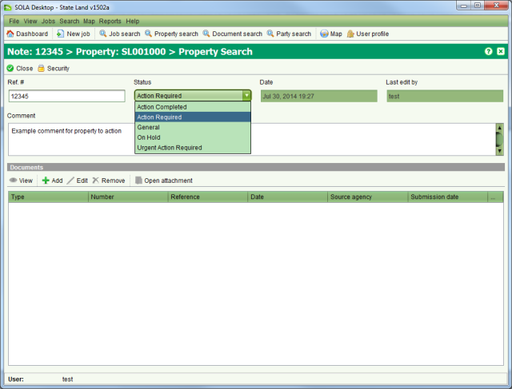

The Note Details screen allows you to view or edit notes associated with state land
property. It can be accessed from the Notes tab on the Property Details screen by selecting a
note to view and clicking  View or
View or  Edit.
Edit.

Note Details
If the property requires some activity to be undertaken by the state land agency, you can add an actionable note to the property by setting the status of the note to Action Required or Urgent Action Required. This will cause the property to display the Properties to action list on the Dashboard.